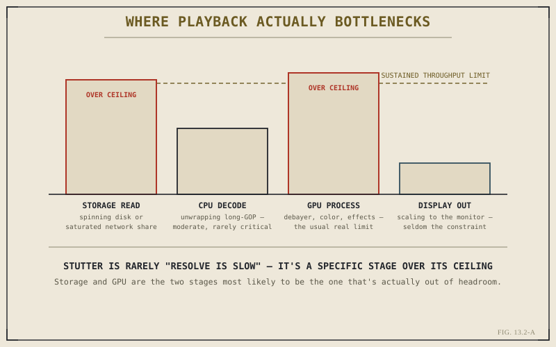

Chapter 13.1 laid out the playback pipeline in outline — storage read, decode, GPU processing, display — and named the GPU and storage as the two stages most often responsible for real trouble. This chapter takes both apart properly. Understanding what each one is actually doing, and why they fail in different ways that feel identical from the editor's chair, is the difference between a productive upgrade and an expensive guess.
The GPU Is Resolve's Real Engine
It's easy to think of the GPU as something that mainly matters for color grading, since that's where the term comes up most explicitly. In practice, the GPU carries almost all of Resolve's real computational load, across every page: debayering RAW footage, applying nodes and effects, rendering titles and Fusion compositions, compositing every layer on a timeline, and processing color corrections in real time during playback. The CPU, by comparison, plays a narrower supporting role — decoding certain compressed formats and orchestrating what the GPU does — but the heavy lifting, the part that actually determines whether a complex timeline plays back smoothly, runs on the GPU. A capable GPU with everything else weak will still struggle; a weak GPU with everything else strong bottlenecks almost everything Resolve does.
Storage Throughput, Not Just Storage Capacity
Storage performance is a genuinely different kind of constraint, and it's commonly misunderstood because people think about drives in terms of capacity — how much they hold — rather than throughput — how fast they can sustain delivering data while playback demands it continuously. A drive with plenty of free space can still be a serious bottleneck if it can't sustain the read speed a high-bitrate master, several multicam angles, or a heavily layered timeline actually requires. Spinning disks, consumer SSDs, NVMe drives, and network-attached storage all sit at meaningfully different points on that throughput scale, and a codec that demands more sustained data per second than the drive underneath it can deliver will stutter no matter how fast the GPU processing that data happens to be.

Storage and GPU are the two stages most likely to actually be the one running out of headroom.
Why These Two Interact
GPU and storage aren't fully independent failure points, and diagnosing which one is actually responsible for a given stutter requires understanding how they interact. A GPU with plenty of spare capacity will still sit idle, waiting, if storage can't deliver frames fast enough to keep it fed — the stutter that results looks exactly like a GPU problem from the playback experience, even though the GPU itself was never the constraint. The reverse is just as real: once storage is genuinely fast enough, a maxed-out GPU gains nothing further from an even faster drive, because the GPU is now the stage that can't keep pace. Upgrading both indiscriminately sometimes fixes the problem by accident; identifying which one was actually starved fixes it reliably, and far more cheaply.
More storage capacity doesn't fix a throughput problem, and a faster GPU doesn't fix a starved one. The two failure modes look identical from the editor's chair — a stutter — and completely different from the system's.
CPU's Narrower, Still Real Role
None of this makes the CPU irrelevant, only secondary. Certain heavily compressed formats — the long-GOP codecs Chapter 2.6 discussed, in particular — still require real CPU work to unwrap before the GPU ever sees a usable frame, and a genuinely underpowered CPU can become the limiting stage on especially demanding multicam or highly compressed footage. It's simply the least common of the three to actually be the true bottleneck in a modern editing system, which is why storage and GPU are where a performance investigation should start, not where it should end up by default.
With storage and GPU established as the two stages worth watching most closely, Chapter 13.3 turns to the tools Resolve gives you for easing pressure on both of them at once — returning to proxies and optimized media from Chapter 2.5, and introducing render cache as the piece that chapter left out.
Key Concepts to Remember
- The GPU carries nearly all of Resolve's real compute load across every page — debayer, effects, color, and compositing all run on it.
- Storage performance is about sustained throughput, not free capacity — plenty of free space says nothing about read speed under load.
- A starved GPU and a maxed-out GPU produce the same visible stutter but need opposite fixes — identifying which one applies matters.
- The CPU handles decode and orchestration and can bottleneck heavily compressed footage, but is rarely the primary constraint overall.
Cross-References Forward
| → Ch. 13.3 | Cache, Proxies, and Optimized Media Revisited — the tools that ease pressure on both storage and GPU at once. |
| → Ch. 13.1 | Revisit the full playback pipeline this chapter's two stages are drawn from. |
| → Ch. 2.6 | Revisit camera formats and codecs, the source of the decode weight that determines storage and CPU demand. |